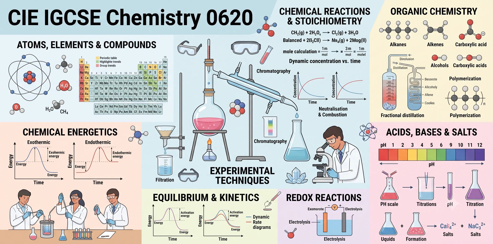
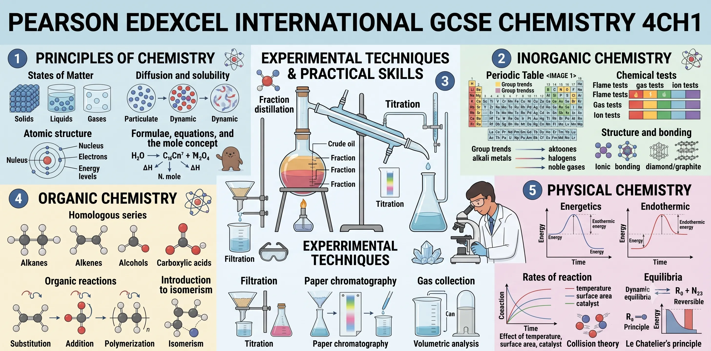
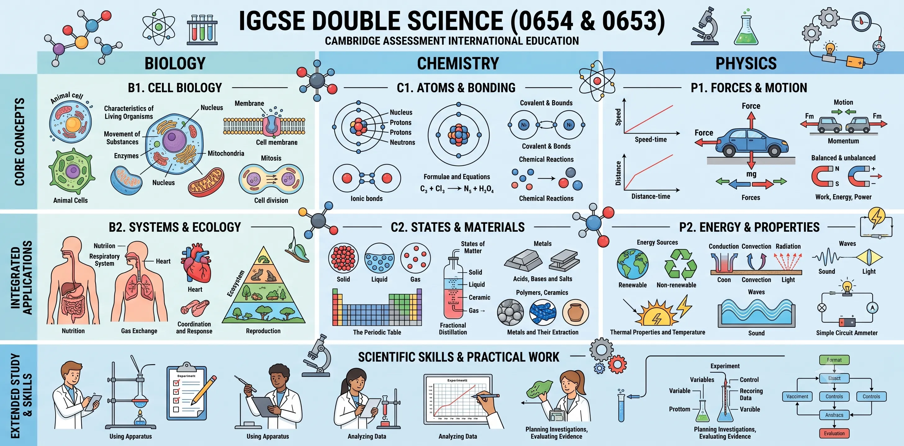
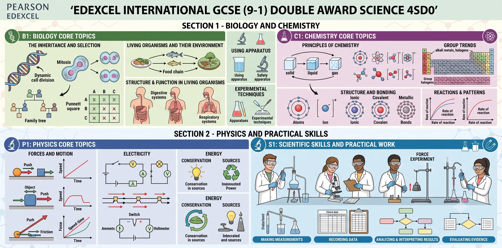

Welcome, students! IGCSE Chemistry introduces you to essential scientific concepts regarding atomic structure, chemical reactions, periodic trends, and laboratory experimental skills. NKK-Education Hub provides high-quality exam preparation resources for both Single Chemistry and Double Award/Combined Science Chemistry under the CIE and Pearson Edexcel boards.
Choose Your Exam Pathway
Select your specific syllabus below to access past papers, syllabus-aligned study notes, and targeted topical practice worksheets:

CIE IGCSE Chemistry (0620)
Cambridge IGCSE Single Chemistry Syllabus
- Explore atomic structures, redox reactions, acids & bases, basic organic chemistry, and environmental chemistry.
- Explore Resources (0620) →

Edexcel IGCSE Chemistry (4CH1)
Pearson Edexcel International GCSE Single Chemistry Syllabus
- Deep-dive into industrial chemical processes (Haber, Contact, etc.), organic chemistry of alkanes/alkenes/alcohols/esters, and quantitative stoichiometry.
- Explore Resources (4CH1) →

CIE IGCSE Science_Chemistry
Cambridge IGCSE Combined Science (0653) & Co-ordinated Sciences (0654)
- Mapped syllabus study notes and topical questions specifically tailored for the Chemistry components of CIE Double and Combined Science.
- Explore Resources (Science) →

Edexcel IGCSE Science-Chemistry
Pearson Edexcel International GCSE Science (Double Award) (4SD0)
IGCSE Chemistry Books
Access the full library of IGCSE Chemistry textbooks, workbooks, and revision guides below:
Cambridge IGCSE Chemistry
Author: Bryan Earl, Doug Wilford
Publisher: Hodder Education
Year: 2014
Download Book
Cambridge IGCSE Chemistry Study and Revision Guide
Author: David Besser
Publisher: Hodder Education
Year: 2017
Download Book
Cambridge IGCSE Chemistry (4th Edition)
Author: Bryan Earl, Doug Wilford
Publisher: Hodder Education
Year: 2021
Download Book
Cambridge IGCSE Chemistry Study and Revision Guide (Third Edition)
Author: David Besser
Publisher: Hodder Education
Year: 2022
Download Book
Complete Chemistry for Cambridge IGCSE
Author: Rose Marie Gallagher, Paul Ingram
Publisher: Oxford University Press
Year: 2013
Download Book
Cambridge IGCSE Chemistry Coursebook (Fifth Edition)
Author: Richard Harwood, Ian Lodge, Chris Millington
Publisher: Cambridge University Press
Year: 2021
Download Book
Cambridge IGCSE Chemistry Workbook
Author: Richard Harwood, Ian Lodge
Publisher: Cambridge University Press
Year: 2011
Download Book
Work Out Chemistry GCSE
Author: Alan Barker, Kathryn Knapp
Publisher: Macmillan Education
Year: 1990
Download Book
Cambridge IGCSE Chemistry Workbook (2nd Edition)
Author: Bryan Earl, Doug Wilford
Publisher: Hodder Education
Year: 2015
Download Book
Cambridge IGCSE Chemistry Practical Skills Workbook
Author: Bryan Earl, Doug Wilford
Publisher: Hodder Education
Year: 2021
Download Book
AQA GCSE (9-1) Chemistry (Student Book)
Author: Richard Grime, Nora Henry
Publisher: Hodder Education
Year: 2016
Download Book
Edexcel International GCSE (9-1) Chemistry (Student Book)
Author: Jim Clark, Steve Owen, Rachel Yu
Publisher: Pearson Education
Year: 2017
Download Book
Edexcel GCSE (9-1) Chemistry (Student Book)
Author: Mark Levesley
Publisher: Pearson Education
Year: 2016
Download Book
Cambridge Checkpoint Science Coursebook 8
Author: Mary Jones, Diane Fellowes-Freeman, David Sang
Publisher: Cambridge University Press
Year: 2014
Download Book
Practice Makes Permanent: 350+ Questions for AQA GCSE Chemistry
Author: Sam Holyman, Owen Mansfield
Publisher: Hodder Education
Year: 2020
Download Book
Edexcel International GCSE Chemistry: Grade 9-1 Course (The Revision Guide)
Author: Paddy Gannon, Alex Billings, Sarah Pattison, Robin Fiello
Publisher: Coordination Group Publications (CGP)
Year: 2017
Download Book
AQA GCSE (9-1) Chemistry (Student Book)
Author: Richard Grime, Nora Henry
Publisher: Hodder Education
Year: 2016
Download Book